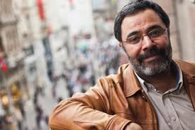

BİYOGRAFİ

Ahmet Ümit1960’ta Gaziantep’te doğdu. 1983’te Marmara Üniversitesi Kamu Yönetimi Bölümü’nü bitirdi. 1985-1986 yıllarında, Moskova’da, Sosyal Bilimler Akademisi’nde siyaset eğitimi gördü. Şiirleri, 1989 yılında Sokağın Zulası adıyla yayımlandı. 1992’de ilk öykü kitabı Çıplak Ayaklıydı Gece yayımlandı.
hmet Ümit, 1960’ta Gaziantep’te doğdu. 1983’te Marmara Üniversitesi Kamu Yönetimi Bölümü’nü bitirdi. 1985-1986 yıllarında, Moskova’da, Sosyal Bilimler Akademisi’nde siyaset eğitimi gördü. Şiirleri, 1989 yılında Sokağın Zulası adıyla yayımlandı. 1992’de ilk öykü kitabı Çıplak Ayaklıydı Gece yayımlandı.
hmet Ümit, 1960’ta Gaziantep’te doğdu. 1983’te Marmara Üniversitesi Kamu Yönetimi Bölümü’nü bitirdi. 1985-1986 yıllarında, Moskova’da, Sosyal Bilimler Akademisi’nde siyaset eğitimi gördü. Şiirleri, 1989 yılında Sokağın Zulası adıyla yayımlandı. 1992’de ilk öykü kitabı Çıplak Ayaklıydı Gece yayımlandı.
hmet Ümit, 1960’ta Gaziantep’te doğdu. 1983’te Marmara Üniversitesi Kamu Yönetimi Bölümü’nü bitirdi. 1985-1986 yıllarında, Moskova’da, Sosyal Bilimler Akademisi’nde siyaset eğitimi gördü. Şiirleri, 1989 yılında Sokağın Zulası adıyla yayımlandı. 1992’de ilk öykü kitabı Çıplak Ayaklıydı Gece yayımlandı.
hmet Ümit, 1960’ta Gaziantep’te doğdu. 1983’te Marmara Üniversitesi Kamu Yönetimi Bölümü’nü bitirdi. 1985-1986 yıllarında, Moskova’da, Sosyal Bilimler Akademisi’nde siyaset eğitimi gördü. Şiirleri, 1989 yılında Sokağın Zulası adıyla yayımlandı. 1992’de ilk öykü kitabı Çıplak Ayaklıydı Gece yayımlandı.
hmet Ümit, 1960’ta Gaziantep’te doğdu. 1983’te Marmara Üniversitesi Kamu Yönetimi Bölümü’nü bitirdi. 1985-1986 yıllarında, Moskova’da, Sosyal Bilimler Akademisi’nde siyaset eğitimi gördü. Şiirleri, 1989 yılında Sokağın Zulası adıyla yayımlandı. 1992’de ilk öykü kitabı Çıplak Ayaklıydı Gece yayımlandı.
hmet Ümit, 1960’ta Gaziantep’te doğdu. 1983’te Marmara Üniversitesi Kamu Yönetimi Bölümü’nü bitirdi. 1985-1986 yıllarında, Moskova’da, Sosyal Bilimler Akademisi’nde siyaset eğitimi gördü. Şiirleri, 1989 yılında Sokağın Zulası adıyla yayımlandı. 1992’de ilk öykü kitabı Çıplak Ayaklıydı Gece yayımlandı.
hmet Ümit, 1960’ta Gaziantep’te doğdu. 1983’te Marmara Üniversitesi Kamu Yönetimi Bölümü’nü bitirdi. 1985-1986 yıllarında, Moskova’da, Sosyal Bilimler Akademisi’nde siyaset eğitimi gördü. Şiirleri, 1989 yılında Sokağın Zulası adıyla yayımlandı. 1992’de ilk öykü kitabı Çıplak Ayaklıydı Gece yayımlandı.
hmet Ümit, 1960’ta Gaziantep’te doğdu. 1983’te Marmara Üniversitesi Kamu Şiirleri, 1989 yılında Sokağın Zulası adıyla yayımlandı. 1992’de ilk öykü kitabı Çıplak Ayaklıydı Gece yayımlandı. Bunu Bir Ses Böler Geceyi, Agatha’nın Anahtarı, Şeytan Ayrıntıda Gizlidir adlı polisiye öykü kitapları izledi.
Şiirleri, 1989 yılında Sokağın Zulası adıyla yayımlandı. 1992’de ilk öykü kitabı Çıplak Ayaklıydı Gece yayımlandı. Bunu Bir Ses Böler Geceyi, Agatha’nın Anahtarı, Şeytan Ayrıntıda Gizlidir adlı polisiye öykü kitapları izledi.
ESERLERİ
- Kırlangıç Çığlığı
- Elveda Güzel Vatanım
- Kar Kokusu
- Sis ve Gece
- Kavim
- Aşk Köpekliktir
- Şeytan Ayrıntıda Gizlidir
- Patasana
- Sultanı Öldürmek
- Beyoğlunun En Güzel Abisi
İletişişim
Mail
Twitter
Sitemiz